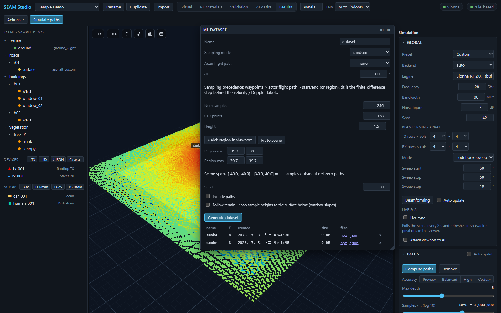

ML datasets and exports
SEAM Studio is not just a viewer — everything you simulate can leave the app as files: NumPy .npz ground-truth datasets for training ML models, an AODT-viewer-compatible RFData bundle, WYSIWYG viewport captures, and per-chart CSV/PNG/SVG exports. This guide walks through each export path.
Everything here works with the Mock backend too — if Sionna RT is not installed, dataset generation and all exports still run end to end (the numbers come from the mock solver, which is fine for testing pipelines).
1. The ML dataset panel
The dataset generator lives in the ML dataset panel (its header renders as ML DATASET). You can reach it two ways:
- Results mode — it is one of the dockable cards on the right.
- From any mode via the toolbar Panels ▾ menu — click the ML dataset row to float it over the viewport, or dock it left/right with the ◧ / ◨ buttons. A floated panel stays visible when you switch modes.

npz / json downloads at the bottom.Generate a dataset step by step
- Name — the dataset's display name (it also appears in the list below).
- Sampling mode — how UE positions are chosen:
random— uniform random positions inside the region,grid— a regular grid over the region (adds a Grid spacing field, in m),trajectory— points along a straight start→end line.
- Actor flight path — optionally sample along a scene actor's authored trajectory (a car, pedestrian, or UAV with waypoints). Pick an actor here and it overrides the region / start-end below; leave it at
— none —to use the sampling mode's own geometry. If no actor has a trajectory yet, the panel says so — assign one in Visual mode first. The hint under the field spells out the precedence: waypoints > actor flight path > start/end (or region). - dt (s) — the finite-difference time step behind the velocity / Doppler labels the backend adds to moving samples.
- Num samples — how many UE positions to solve (1–20000). CFR points — frequency-response samples per position (2–4096). Height (m) — the UE sampling height.
- Set the region (for
random/grid):- ⌖ Pick region in viewport — the button switches to
Click 2 corners… (Esc); click two opposite corners of the region on the scene surface and the XY fields fill in (Esc cancels). - Fit to scene — sets the region and height to cover the whole scene (the panel also seeds itself from the real scene bounds when a project loads, so you rarely start from garbage values).
- Region min / Region max — the XY corners as numbers.
- Watch the hint line, e.g. "Scene spans [-40.0, -40.0]…[40.0, 40.0] m — samples outside it get zero paths." Sampling outside the geometry is the #1 cause of useless datasets.
For
trajectorymode you instead get ⌖ Pick path in viewport plus Start / End XYZ fields. - ⌖ Pick region in viewport — the button switches to
- Seed — makes the random sampling reproducible; record it for papers.
- Include paths — additionally dumps every sample's full ray paths (vertices + interactions) as
paths.jsonl. Large; off by default. - Follow terrain — snaps each sample's height to the surface below it plus the height offset. Use it on sloped outdoor scenes; leave it off indoors (it would snap to the roof).
- Press Generate dataset. The button shows
Generating…while the solver sweeps the positions.
The dataset list
Finished datasets appear in the table below the button, one row each:
- name / # / created / size — name, sample count, creation time, file size.
- files — download links for npz (
dataset.npz, the arrays) and json (metadata.json, the config echo + conventions). - A ⚠ N zero-path flag on the name means N samples produced no paths at all (UE outside the scene or fully occluded) — re-check your region.
- The × button deletes a dataset; it arms to ✓? and you click again to confirm (it auto-disarms after a few seconds).
On disk, datasets live under the project folder at export/datasets/<dataset_id>/.
What is in the labels
The .npz contains per-sample positions, complex CFR, per-path CIR gains and delays, LOS flags, RSS, and dispersion metrics — the exact array schema, the AODT field mapping, and a ready-to-run training example (examples/ml/train_channel_estimator.py) are documented in ML ground-truth datasets.
2. RFData export (AODT-viewer bundle)
To hand results to an external AODT-style viewer or your own pipeline, use the toolbar: Actions ▾ → Export RFData. It writes a bundle to export/rfdata/ inside the project folder:
| File | Content |
|---|---|
scenario_meta.json | units, frequency, coordinate transform, time window |
devices.json | transmitters + receivers (positions in meters) |
paths.json | time-indexed ray paths |
trajectory.csv | per-waypoint UE metrics (time_s, ue_id, x_m, y_m, z_m, rss_dbm, sinr_db, path_gain_db) |
radio_map.csv | plane heatmap samples |
calibration_points.json | 3 coordinate-check reference points |
After the export, a dismissible row appears in Results — "Exported RFData to export/rfdata" — with a download link per file, so you don't have to dig through the project folder.
3. Viewport captures — Snapshot and Render
The two icon buttons in the bottom-right cluster of the viewport save scene images:
- Snapshot (camera icon) — saves exactly what you see (WYSIWYG): current camera pose, rays, markers, radio-map overlay, at full canvas resolution, as PNG. The tooltip reads "Save this exact view as a PNG (what you see, full resolution — paper-ready)". This is the button for paper and slide figures.
- Render (film icon) — an offline, physically shaded path-traced render via Mitsuba. Slower, and deliberately not the on-screen view — no rays or overlays, just the shaded scene.
The entity POV inset (the live first-person view from a device or actor) has its own camera button that saves the POV frame as a full-resolution PNG.
4. CSV and figure exports from the dashboards
- Every chart in the Metrics dashboard panel (and the other paper-styled charts) sits in a frame with PNG / SVG / CSV buttons in its header — bitmap at 3×, vector, or the raw data as CSV. Figures export as shown: white background, Times New Roman.
- The dashboard header has an Export all (CSV) button that downloads the entire KPI table as
metric,value,unitrows. - The paths table in Results has Export filtered CSV (N) — it exports exactly the currently filtered path set, one row per path with type, power, delay, and interaction materials.
Related docs
- ML ground-truth datasets — the
.npzschema, zero-path warnings, AODT field mapping, and the training example script. - Getting started — install, first project, the mode tabs.
- Simulation guide — paths, radio maps, and the solver settings a dataset inherits.
- Scene & project format — where files live inside a project folder.
- Sionna versions — the
enginerecorded inmetadata.jsonfor reproducibility. - 15-minute tutorial — the full first-session loop, including dataset generation.